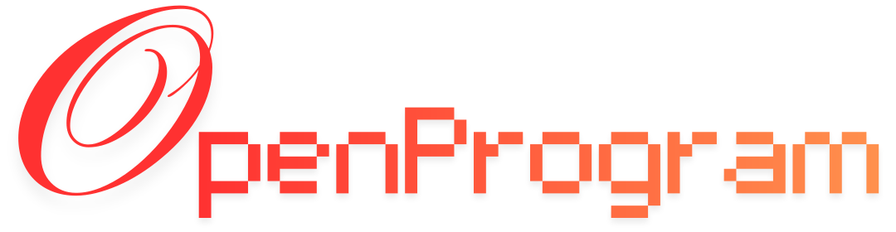
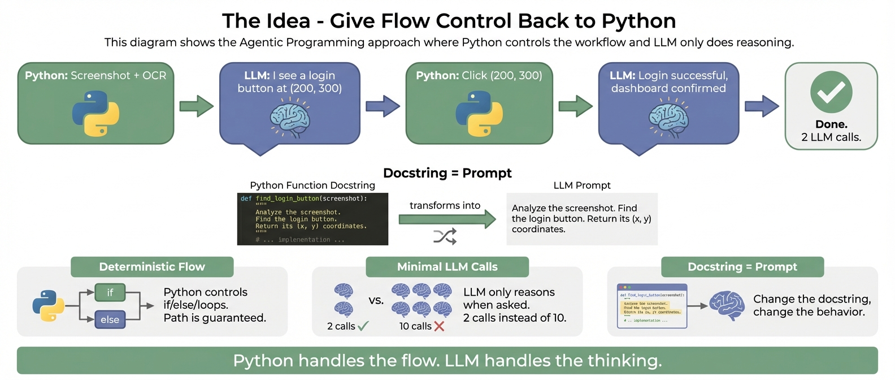

OpenProgram
Any LLM · macOS and Linux releases · Self-evolving.
An LLM is flexible. Code is deterministic.
Pick one extreme and you lose. A harness balances the two — interleaved moment to moment.
- Unpredictable execution
- Context explosion
- No output guarantees
LLM for the judgement.
- Brittle, no adaptation
- You lose the intelligence
- Can't handle novelty
Agentic Programming
Python drives the control flow you want fixed.
The LLM reasons only when you ask it to.
“The more constraints one imposes, the more one frees oneself.”
— Igor Stravinsky, Poetics of Music

Five things you get out of the box
Deterministic flow
Python drives control flow; the LLM reasons only when asked.
Run it anywhere
macOS and Linux hosts — terminal, browser, or chat. Windows and mobile use a remote browser connection.
Automatic context
A shared DAG threads context into every call. Multi-agent ready.
Any LLM, any provider
API key, or the CLI subscription you already pay for — Claude / Codex / Gemini.
Self-evolving
The agent builds, runs, and improves its own workflows and tools.
One backend
~/.openprogram — terminal and browser share sessions live.
Why agentic workflows matter

From zero to chatting in four steps
Install
curl -fsSL openprogram.io/install | sh
Downloads one complete macOS or Linux runtime with managed Python.
Chat
openprogram # TUI
openprogram web # browser
Web on :18100, API on :18109. One backend behind both.
Write functions
"create an @agentic_
function that …"
Ask in chat — the skill handles decorator, smoke test, validation.
Included Programs
GUI · Research · Wiki
included in every release
Third-party harnesses remain additional extensions.
Three siblings, one install
Any third-party harness plugs in the same way — no symlinks, identical on Windows.
GUI Agent
Observe → plan → click → verify by vision. Drives desktop apps & OSWorld VMs across macOS / Windows / Linux.
OSWorld Multi-Apps 79.8%Research Agent
Literature survey → idea → experiments → paper draft → cross-model review.
Topic → submission draftWiki Agent
Ingests notes / docs / chats into an Obsidian-compatible vault with [[wikilinks]].
Obsidian vault outputA conversation as a git DAG
The web UI draws a live mini-DAG of the session — branch / merge / attach on any node, multi-agent rows tagged by producer, drag-and-drop attachments.

Python for the flow.
The LLM for the judgement.
Open-source agentic harness — install with one pip command, bring any LLM, and let your workflows evolve themselves.